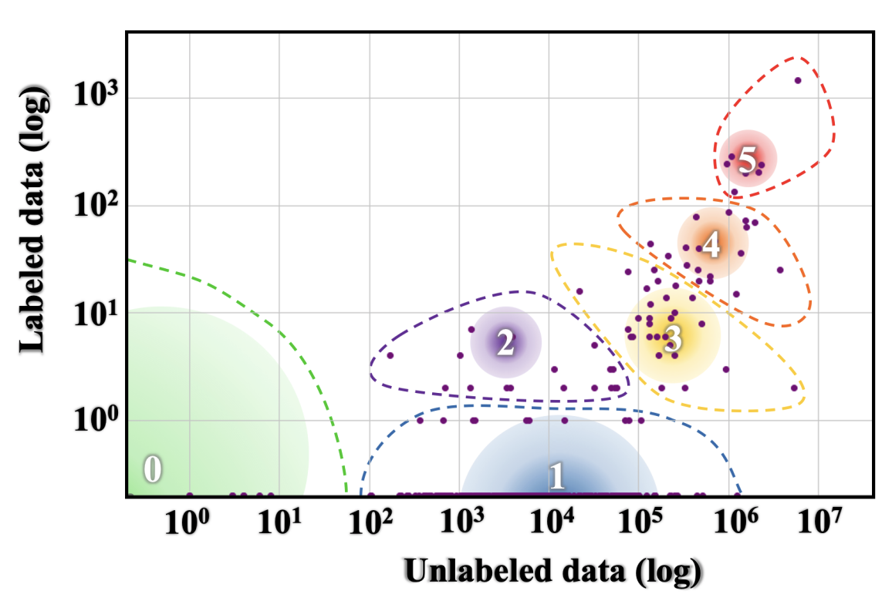
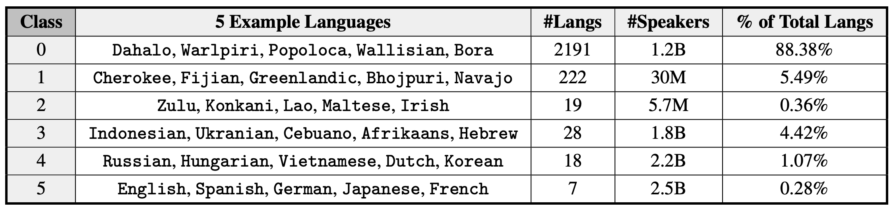

Week 7. Outro#
This is the wrap-up of the course. This week’s agenda is seminar-like recap of the most difficult bits of content (according to students!), exam prep, the remaining student presentations and a bit of an outlook – things I wish we had time to cover, but we unfortunately didn’t.
First, let’s take a bird’s-eye view on the things that we did cover in the very short time of 6 weeks. Our main goal was to discuss the fundamentals of linguistics and to relate these fundamentals – wherever possible – to questions, tasks, resources and models in natural language processing and language technology. We talked about different linguistic modalities: spoken language, written language and signed language (but, unfortunately, did not talk in much detail about the latter); how words are built from morphemes, how sentences are built from words, and some ways to approach linguistic meaning. We discussed and sometimes tried out different ways to arrive at a linguistic analysis (experiment, introspection, analysis of text corpora etc.). We saw different ways such analysis can look like (a list of phonemes, a rule of morpheme attachment, a tree, a dependency structure, a function from a set to its subset etc.). I hope this makes a decent starting point for whatever language-related work comes after this course.
At this point, I want to mention things we did not cover systematically in this course but are extremely important – both as separate linguistic sub-disciplines and as sources of insights when building and evaluating language technology of different types:
Cross-linguistic variation. Throughout the course, the material has been selected in a way that emphasizes the many potential ways for language to organize its systems – sounds, grammar – and that more than one way is indeed usually attested across languages, while at the same time there are limits to this variability. I really can’t stress this enough: languages are different. I wish we had a week or two to focus just on this: this seemingly obvious fact is surprisingly often overlooked when it comes to both linguistic theory and NLP systems. Scaling things in the dimension of multilinguality is very much an unsolved task. Here is a relevant overview from 2020, and what they say there still stands in 2023.
Joshi, Santy et al. 2020. The State and Fate of Linguistic Diversity and Inclusion in the NLP World. ACL 58.
The paper groups languages into 6 classes with respect to availability of different types of data for these languages and therefore how included they are predicted to be in the processes of NLP and language technology development:
{kind=link}
Language groups range from class 0 (‘The Left-Behinds’, languages with exceptionally limited resources that are basically ignored when it comes to language technology) to class 5 (‘The Winners’, languages that have dominant online presence and not only massive proportion of language technology built for them but also the potential for even more, given the amount of resources). Strikingly, almost 90% of languages belong to class 0 and less than 1% belong to class 5. Definitely something to think about in terms of its consequences.
{kind=link}
Language acquisition. We didn’t talk at all about how people acquire language, and that’s really unfortunate because this is a topic of a lot of recent debate in relation to NLP. Typically developing children acquire language surprisingly fast during the first several years of life. It is even more impressive if we think about the fact that linguistic input they get during this time is quite limited, both quantitatively and in coverage of particular types of information that is crucial for learning some properties of language. This observation (the poverty of stimulus) has been a foundational argument in favour of linguistic knowledge being partly innate: maybe people are born with predisposition for certain properties of communicative systems, so they don’t need to learn all of it from input? Recent language models seem to be very good at language, and they are certainly not ‘born’ with any prior linguistic knowledge – maybe the innateness idea is wrong? This debate is as hot as ever now. I am not taking sides! I, of course, have an opinion – but this is not the place. Anyway, too bad we couldn’t talk about this debate! For those who are interested – read these two papers in this specific order:
Piantadosi, S. 2023. Modern language models refute Chomsky’s approach to language.
Katzir, R. 2023. Why large language models are poor theories of human linguistic cognition. A reply to Piantadosi (2023).
Language production and processing. The information in the course has been organized as an exploration of abstract rules of an abstract system: How can we formulate the laws of two morphemes combining together, or what’s the structure of a sentence? But that might seem strange (and it probably did!) – because language is not just something floating in abstract vacuum, language is what people do things with: they process it, they produce it, they memorize bits of it, they give commands, make promises and so on. How do they do it? What’s the relation between this abstract system we talked about and its use in practice? What happens in people’s brains when they produce or process language? What’s the relation between linguistic behaviour and other cognitive systems, such as memory or attention? That’s particularly important in comparison to what artificial linguistic agents do: what should we expect from such systems, how similar or different from us they are expected to be and in what ways?
Sociolinguistics. Again, it’s important to emphasize and study further dimensions in which language is not homogeneous. Practically all levels of language interact with our social personae, and this is a two-way interaction: not only is the choice of lingusitic means affected by who we are, but the other way around as well – we use language to construct our social identities. Knowing more about how this works helps when we go back to language technology and are then able to ask more informed questions about fairness in NLP systems: what groups of speakers they are tailored to and how do we find out? And after we do find out, what’s the next step?
Language and thought. During one of student presentations, the Sapir-Whorf hypothesis (a.k.a. linguistic relativity) was mentioned, and I felt bad that we didn’t have time to talk about it more. Does language shape the way we think? The answer I think really depends on what we mean by this. There is a dangerous path here that leads to exotisation and alienation: sometimes pretty superficial differences in language systems lead to considering speakers of other languages equipped with qualitatively different conceptual tools. Could some weaker version of linguistic relativity be justified? I don’t know. There’s been some revival of this topic recently, check out the TED talk by Lera Boroditsky, but approach it with caution!
Language change and language history. A lot of properties of language do not fall under clear and logical rules. One of the reasons for this is that language is constantly undergoing change – and what we see when we look at language at any particular time point is a snapshot of a dynamic system, which is often best described in terms of stages of different historic processes. Language change is not random, it obeys its own laws and shows paths and tendencies. An exciting topic that we had to completely leave out.
Beyond natural language. We started the course with a definition of linguistics that limited our attention to natural human language. That’s great, but it’s also limiting in that we miss comparison with other types of systems – artificial human languages, natural non-human languages, other structured systems that are not necessarily communicative systems in the same way as language is, but share a lot of the organizational principles with language. We had a brief moment of reflection on some of these topics – recall the discussion of Hectapod language during student presentations! But a systematic discussion was missing. If you are interested in these topics, I think you should look at this exciting recent book:
Schlenker, P. 2022. What It All Means: Semantics for (Almost) Everything.
I guess that’s all I want to say! I hope it was useful.